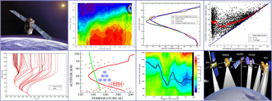

Artem Feofilov is a Research Engineer (IGR1) at the Laboratory of Dynamic Meteorology (LMD), Sorbonne Université / CNRS / École Polytechnique, Palaiseau, France. He specializes in calibration/validation of spaceborne lidars, development of atmospheric retrieval algorithms, and long-term cloud climate records.